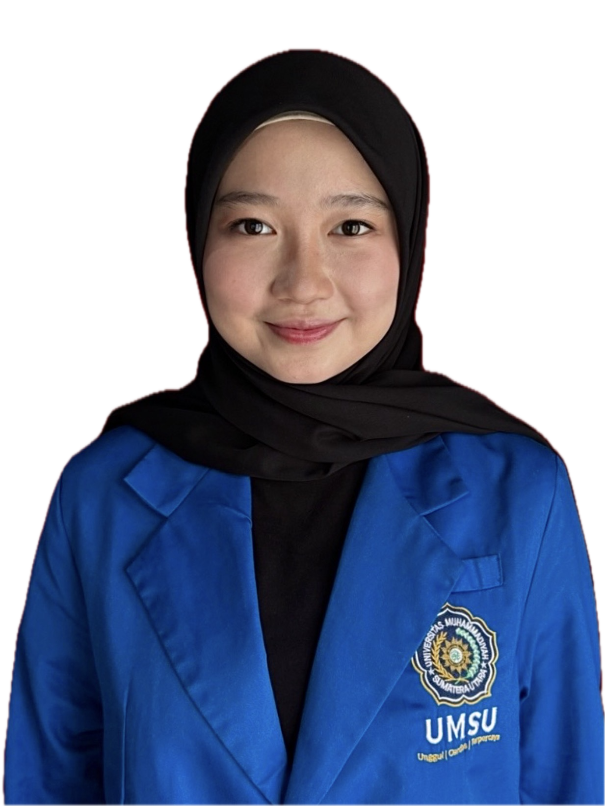
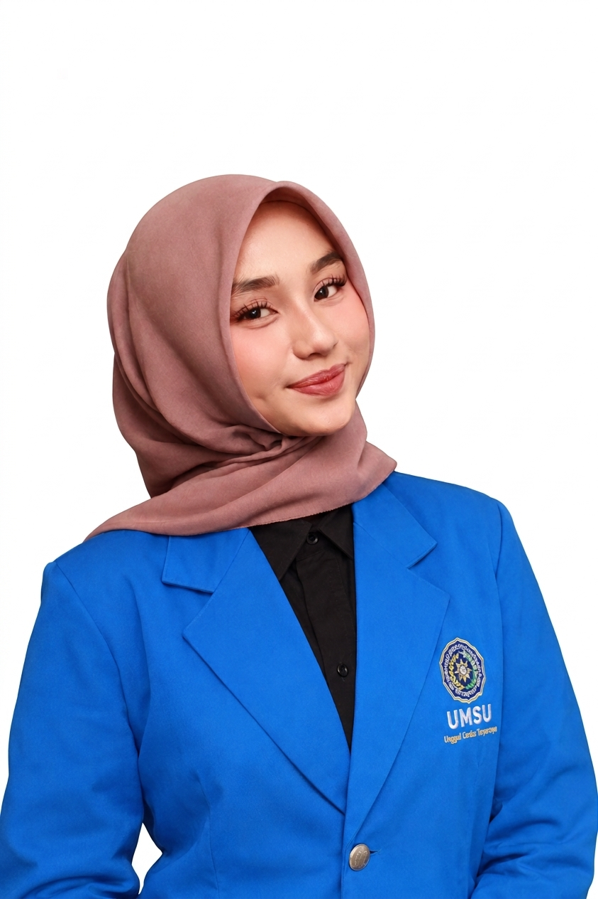

Ketahui Risiko Tuberkulosis (TBC) Anda Sejak Dini
Deteksi awal menyelamatkan nyawa.
Lakukan skrining mandiri secara aman, rahasia, dan tanpa menyimpan data Anda di internet.
Mengapa Skrining TBC Penting?
Menular Lewat Udara
Bakteri TBC menyebar melalui percikan dahak saat penderita batuk, bersin, atau bicara.
Dapat Disembuhkan
TBC 100% bisa disembuhkan jika dideteksi sejak dini dan pasien rutin meminum obat hingga tuntas.
Melindungi Keluarga
Dengan mengetahui status risiko, Anda selangkah lebih maju dalam melindungi orang-orang terdekat.
Pertanyaan yang Sering Diajukan
Sangat aman. Sistem ini dirancang untuk bekerja 100% di peramban (browser) Anda. Kami tidak menyimpan, mengumpulkan, atau mengirim data jawaban Anda ke server mana pun.
Bukan. Skrining ini hanya alat bantu untuk menilai tingkat risiko Anda berdasarkan gejala klinis umum. Diagnosis pasti TBC hanya bisa dilakukan oleh dokter melalui Tes Cepat Molekuler (TCM) atau tes dahak dan rontgen dada.
Segera kunjungi Puskesmas atau fasilitas layanan kesehatan terdekat jika Anda batuk terus-menerus selama lebih dari 2 minggu, batuk berdarah, atau mengalami keluhan dada yang mengganggu.
Tim Pembuat Poster

Davina Ramadhani
Anggota Tim
Fakultas Kedokteran dan Ilmu Kesehatan UMSU 2024

Nurul Faquita Ginting
Ketua Tim
Fakultas Kedokteran dan Ilmu Kesehatan UMSU 2023
Siddiq Alaraf
Anggota Tim
Fakultas Kedokteran dan Ilmu Kesehatan UMSU 2026